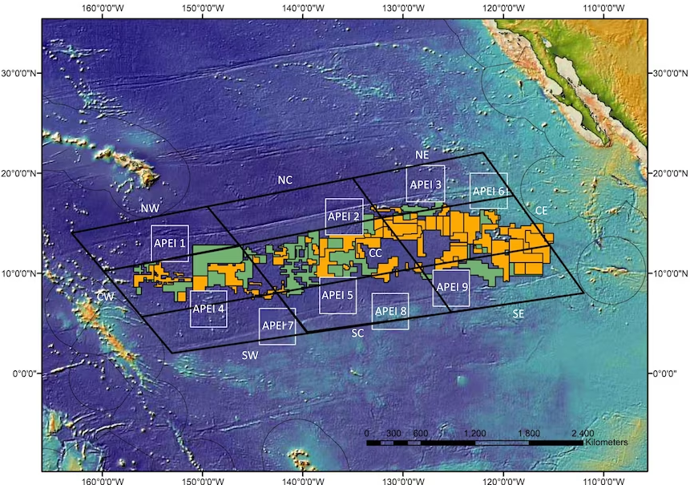
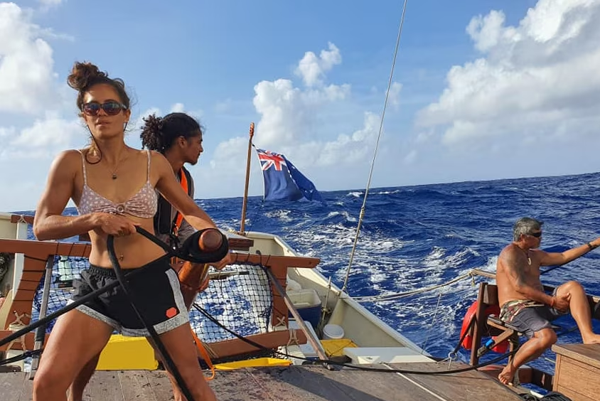
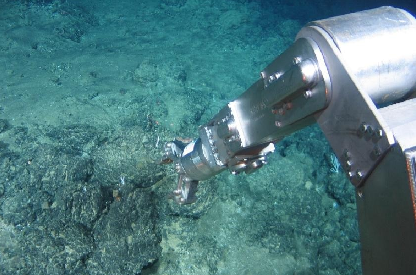

.png)
The Pacific Ocean's seabed could soon be open for deep-sea mining
Posted by ABC A/P
7 Jul 2023
Share this article:
The International Seabed Authority is preparing to resume negotiations that could open the world's ocean floor for mining, including for materials critical for the green energy transition.
Years-long negotiations are reaching a critical point where the authority will soon need to begin accepting mining permit applications, adding to worries over the potential impacts on sparsely researched marine ecosystems and habitats of the deep sea.
Countries and private companies can start applying for provisional licenses if the UN body fails to approve a set of rules and regulations by July 9. Experts say it's unlikely since the process will likely take several years.
Here's a look at what deep sea mining is, why some companies and countries are applying for permits to carry it out and why environmental activists are raising concerns.
What is deep-sea mining?
Deep-sea mining involves removing mineral deposits and metals from the ocean's seabed.
There are three types of such mining: taking deposit-rich polymetallic nodules off the ocean floor, mining massive sea floor sulphide deposits, and stripping cobalt crusts from rock.
These nodules, deposits and crusts contain materials, such as nickel, rare earths, cobalt and more, that are needed for batteries and everyday technology like mobile phones and computers.
Some companies are looking to vacuum materials from the sea floor using massive pumps, while others are developing artificial intelligence-based technology that would teach deep sea robots how to pluck nodules from the floor.
Some are looking to use advanced machines that could mine materials off the sides of huge underwater mountains and volcanoes.
Companies and governments view these as strategically important resources that will be needed as onshore reserves are depleted and demand continues to rise.
How is it regulated now?
Countries manage their own maritime territory and exclusive economic zones, while the high seas and the international ocean floor are governed by the United Nations Convention on the Law of the Seas.
It is considered to apply to states regardless of whether or not they have signed or ratified it.
Under the treaty, the seabed and its mineral resources are considered the "common heritage of mankind" that must be managed in a way that protects the interests of humanity through the sharing of economic benefits, support for marine scientific research, and protecting marine environments.
Mining companies interested in deep sea exploitation are partnering with countries to help them get exploration licenses.
More than 30 exploration licenses have been issued so far, with activity mostly focused in an area called the Clarion-Clipperton Fracture Zone, which spans 4.5 million square kilometres in the Pacific Ocean between Hawaii and Mexico.
Mining exploration areas shown in orange in the CCZ, with Hawaii to the north-west, Kiribati in the south-west and Mexico to the east.(Supplied: Frontiers in Marine Science/Travis Washburn et al)
What are the environmental concerns?
Only a small part of the deep seabed has been explored and conservationists worry that ecosystems will be damaged by mining, especially without any environmental protocols.
Damage from mining can include noise, vibration and light pollution, as well as possible leaks and spills of fuels and other chemicals used in the mining process.
The full extent of implications for deep sea ecosystems is unclear, but scientists have warned that biodiversity loss is inevitable and potentially irreversible.
Cook Island resident Alanna Smith said earlier this year that any damage to ocean ecosystems would be devastating for her country, where the sea is central to life.
"I've always admired watching my aunties out on the reefs, getting seafood to bring home, so it's provided for us," she told Pacific Beat.
Alanna Smith says Pacific Islanders have a spiritual connection to the deep sea.(Facebook: Alanna Smith)
Ms Smith now works for an environmental NGO called Te Ipukarea Society, which advocates for protecting the ocean.
She said it was too early to consider deep-sea mining in the area.
"[It] is very concerning given there's still a lot of data and research that has to be collected," Ms Smith said.
"We're constantly finding new stuff and it's a little bit premature to start mining the deep sea when we don't really understand the biology, the environments, the ecosystems or anything else," said Christopher Kelley, a biologist with research expertise in deep-sea ecology.
Environmental advocates say not enough is known about the impacts of deep-sea mining.(Nautilus Minerals)
What's next?
The ISA's Legal and Technical Commission, which oversees the development of deep-sea mining regulations, will meet in early July to discuss the yet-to-be mining code draft.
The earliest that mining under ISA regulations could begin is in late 2024 or 2025. Applications for mining must be considered and environmental impact assessments need to be carried out.
In the meantime, some companies — such as Google, Samsung, BMW and others — have backed the World Wildlife Fund's call to pledge to avoid using minerals that have been mined from the planet's oceans.
More than a dozen countries—including France, Germany and several Pacific Island nations— have officially called for a ban, pause or moratorium on deep sea mining at least until environmental safeguards are in place, although it’s unclear how many other countries support such mining.
Other countries, such as Norway and the Cook Islands, are proposing opening their waters to mining.
Cook Islands Prime Minister Mark Brown told The Guardian that pursuing the controversial practice was "the right thing to do for our country", and that it proceeded with caution.
Related articles